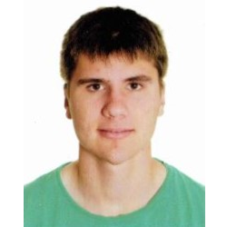

GP

On the way to Computer Engineering
Hi! I'm Guillem, a Computer Engineering student at the University of Girona. If you'd like to learn more about me, keep reading!
At this moment, my goal is to complete my degree successfully. Alongside my studies, I'm developing a keen interest in web development and have experience working in a medical center. I'm constantly learning and open to new challenges in the tech field.
I'm based in Banyoles, a beautiful town in Catalonia known for its lake and natural surroundings. Studying at the University of Girona, I benefit from the proximity to both a peaceful hometown and a great academic community.
My main interests revolve around programming, web development, and sports—particularly canoeing. I'm passionate about both coding and the outdoors, finding balance between time spent creating digital solutions and training on the water.
2018 - 2020 |
I completed a Higher Degree in Diagnostic Imaging and Nuclear Medicine, which provided me with a solid foundation in advanced imaging techniques, including X-rays, CT scans, and MRI. These studies gave me both technical expertise and practical experience in diagnostic procedures, along with a strong commitment to patient care and safety. |
Diagnostic Imaging and Nuclear MedicineEUSES 9.02 |
2020 - 2021 |
I completed my first year of medical studies, where I gained foundational knowledge in human biology, anatomy, and the basics of clinical practice. Although I decided not to continue with the program, this experience gave me a valuable understanding of medical sciences and reinforced my analytical and problem-solving skills. |
MedecineUniversitat de Vic |
2022 - In progress |
My studies focus on developing a strong foundation in programming, algorithms, and computer systems, with hands-on experience in languages like Java, C++, html, javascript and other programming languages. These studies are equipping me with the technical skills and problem-solving abilities essential for a career in tech. |
Bachelor's degree in Computer EngineeringUniversitat de Girona |
4 months |
I spent two summers working at Vivers Carex, where I worked in transplanting and cultivation of forest plants. This role involved careful planning, hands-on work with diverse plant species, and maintaining optimal growth conditions. |
Transplanting and cultivation of forest plantsVivers Carex |
2 month |
I completed internships in X-ray and CT scan imaging, where I gained hands-on experience in operating diagnostic equipment and performing imaging procedures. This training provided me with practical skills in patient preparation, equipment handling, and image analysis to assist in accurate diagnostics. |
X-ray and CT scan internshipsHospital d'Olot |
6 years - In progress |
I am currently managing a medical center that specializes in medical examinations for various permits and licenses, including driving and firearms certifications. My role involves overseeing day-to-day operations, ensuring compliance with regulatory standards, and providing a smooth and professional experience for clients. |
Managing a medical center for medical examinations for permits and licensesCEMES Reconeixements Mèdics |
1 year - In progress |
I am currently responsible for the maintenance and repair of canoeing equipment, a role that requires technical precision and attention to detail to ensure the safety and optimal performance of all gear. My work includes regular inspections, repairs, and preventative maintenance, allowing athletes to perform at their best with reliable, high-quality equipment. |
In charge of maintenance and repair of canoeing equipmentClub Natació Banyoles |